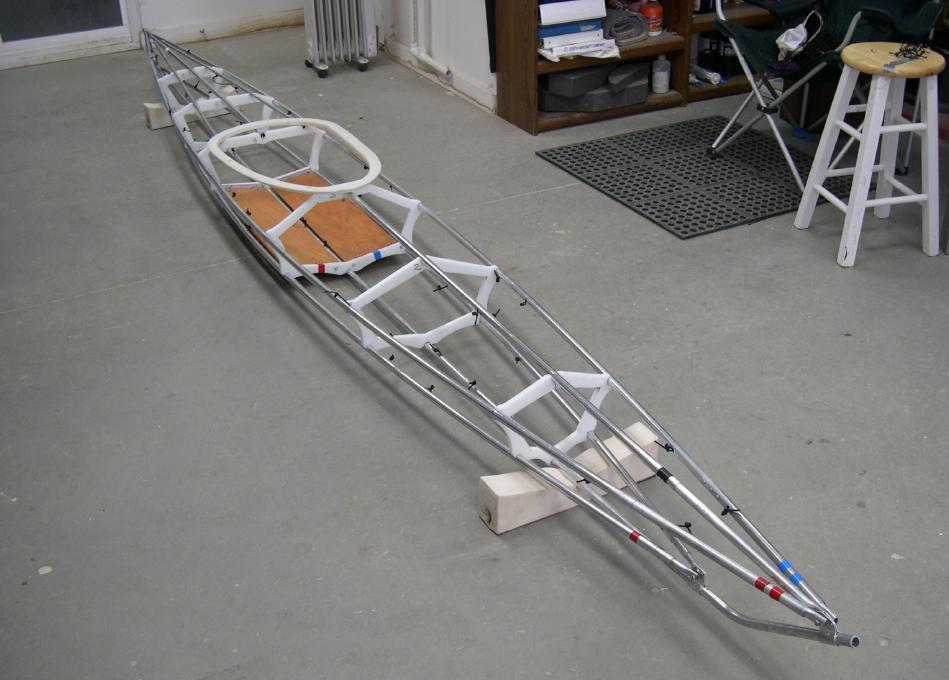

| Frame Assembly (8 of 9) | Menu Last Page Next Page |
|
 Frame Assembly Completed - On this Sea Otter, a removable aluminum tube coaming will be attached directly to the skin, so no coaming to frame assembly is required. If an HDPE or wood coaming were being used ( as displayed) , it would attach to cross sections 3 and 4 after the skin is attached. Skin assembly can be seen on the next page. |
|